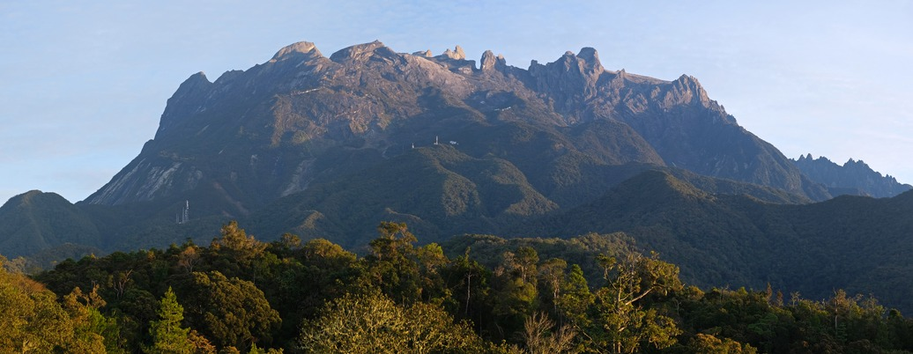
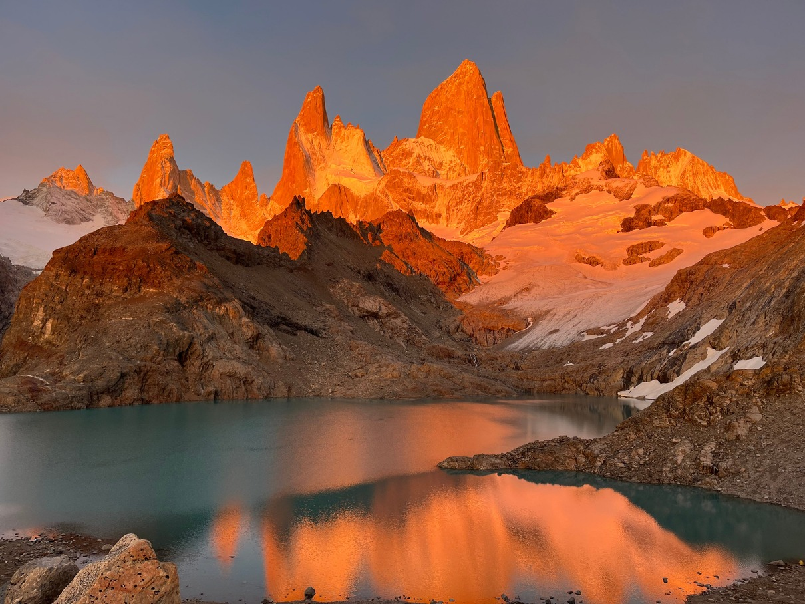
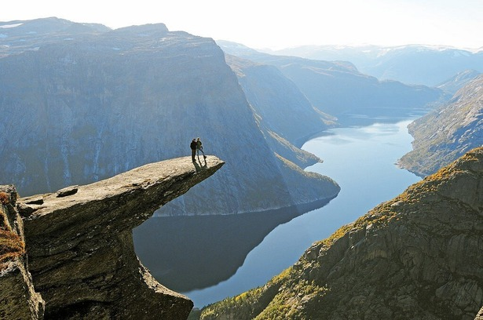

Location: Sabah, Malaysia
Difficulty: 4.5 / 5 Stars ★★★★
Elevation Gain: 2,300 m (7,545 ft)
Distance: 17 km (10.5 miles)
Price: $350 - $500 USD
A multi-day trek up thousands of wooden and stone stairs, leading to an exposed pre-dawn summit walk across smooth granite slabs using ropes.

Location: Vestland, Norway 🇳🇴
Difficulty: 4.5 / 5 Stars ★★★★
Elevation Gain: 800 m (2,624 ft)
Distance: 27 km (16.7 miles)
Price: Free (Parking/shuttle fees $40 - $70 USD
A grueling 8- to 12-hour trek across unpredictable mountain terrain, cold mud, and exposed rocky plateaus that demands high endurance. *

Location: El Chaltén, Argentina
Difficulty: 5 / 5 Stars ★★★★★
Elevation Gain: 1,050 m (3,444 ft)
Distance: 22 km (13.6 miles)
Price: Free
While the first 9 km are moderate, the final 1 km is a steep scramble up loose, windy gravel moraine that pushes even seasoned hikers to their limit.